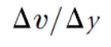
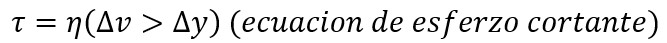
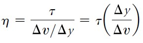
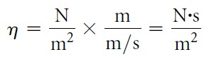
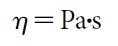
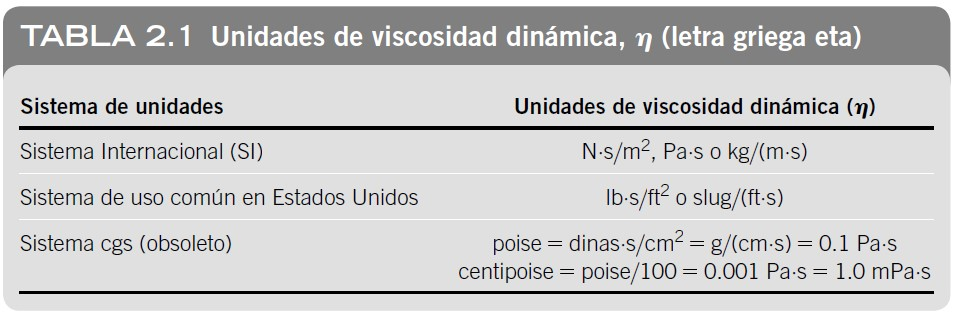
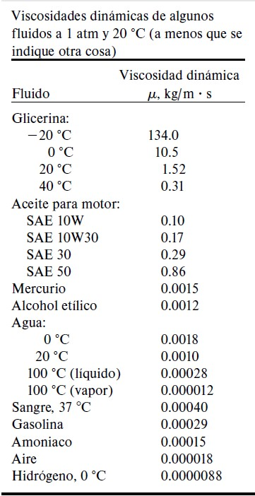
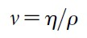
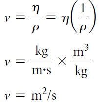
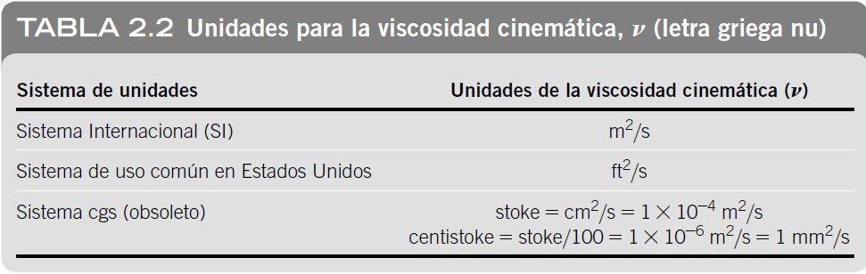

Viscosidad
Viscosidad es la fricción interna de un fluido, causada por la atracción molecular, que lo hace resistir la tendencia a fluir. Habrá mayor o menor viscosidad según la resistencia que hagan las moléculas o las partículas que conforman un líquido al momento de separarse o deformarse. A mayor fuerza de adherencia de las moléculas, mayor viscosidad.
Para medir la viscosidad de los fluidos y algunos otros parámetros de flujo de un fluido, se utiliza el viscosímetro. Hay de cuatro tipos de viscosímetro:
• De rotación
• De tubo capilar
• DE OSWALD- CANNON-FENSKE
• DE BROOKFIELD
En mecánica de fluidos, se hace mención de dos tipos de viscosidad: viscosidad dinámica o también llamada viscosidad absoluta, y viscosidad cinemática.
Viscosidad dinámica: se entiende como la relación entre el esfuerzo cortante y el gradiente de velocidad, que se representa con la letra griega µ, pero también se puede representar con la letra η.
Nota para los estudiantes: la letra griega con la que se identificara la viscosidad dinámica en la materia de mecánica de fluidos sera µ.
--> el esfuerzo cortante es esfuerzo producido cuando la fuerza aplicada es paralela / tangencial al área de la superficie de aplicación. denotado por la letra griega 𝜏 (tau)
--> el gradiente de velocidad es una medida del cambio de velocidad y se define como .
-->La definición de la viscosidad dinámica se puede derivar de la ecuación  al despejar η :
Viscosidad dinámica:

Las unidades de η se pueden obtener al sustituir las unidades del SI en la ecuación anterior de la siguiente manera:

Puesto que el pascal (Pa) es el nombre usado para N/m2, η también se puede expresar de la siguiente manera:


Nota: Mecánica de Fluidos. 7 ed. (2015. pág. 22). por Mott, R.L. & Untener J.A.

Nota: Mecánica de Fluidos Fundamentos y Aplicaciones. 4 ed. (2018. pág. 54). Por Cengel, Y. & Cimbala. J
Viscosidad cinemática: En mecánica de fluidos, muchos cálculos implican la relación de la viscosidad dinámica para con la densidad del fluido. Por una cuestión de conveniencia, la viscosidad cinemática 𝜈 (letra griega nu) se define como:

Puesto que η y ⍴ son propiedades del fluido, 𝜈 también es una propiedad.
Las unidades del SI para la viscosidad cinemática se pueden derivar al sustituir las unidades desarrolladas previamente para η y ⍴ :


Nota: Mecánica de Fluidos. 7 ed. (2015. pág. 22). por Mott, R.L. & Untener J.A
Mott, R.L. & Untener J.A. (2015). Mecánica de Fluidos. 7 ed., pág. 21-22. México: Pearson Educación de México, S.A. de C.V.